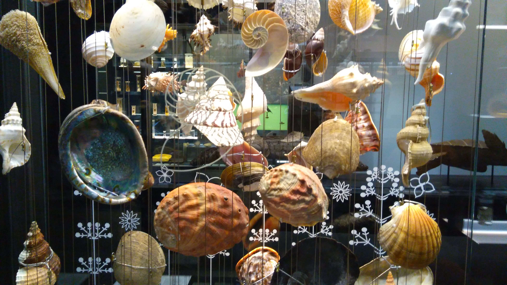

La biblioteca del Congreso de Washington D.C. (EEUU), fundada en 1800, se considera la biblioteca más grande del mundo ya que alberga 164 millones de obras. Buscar una obra sería prácticamente imposible si no estuviesen ordenadas. Además, la forma de ordenar es importante... No sería lo mismo clasificar un libro por su color, tipo de encuadernación, tamaño o antigüedad, que por su título, autoría o género literario.
Actualmente se considera que hay unos 1,9 millones de especies de seres vivos. Esta biodiversidad tan enorme también necesita de un sistema que nos permita ordenar, clasificar e identificar a cada una de ellas y, además, con unos criterios válidos para toda la comunidad científica.

La parte de la Ciencia que se encarga de ello se denomina Taxonomía. Esta denominación se la debemos a Carl von Linné (1707‐1788,) un naturalista sueco que estableció el primer sistema de clasificación de los seres vivos para ordenarlos, por sus semejanzas de forma y estructura, en grupos o taxones. Además, también creó un sistema de dos palabras para denominar a cada especie, que se llama nomenclatura binomial. ¿A qué nos suena eso de Homo sapiens?
Por todo ello a Linné se le considera el “Padre de la Taxonomía”, labor que continuó su hija Elisabeth. Desde sus tiempos hasta la actualidad, los sistemas de clasificación de los seres vivos han ido adaptándose según avanzaba la ciencia en nuevos descubrimientos en genética, evolución, bioquímica, anatomía y fisiología.
A lo largo de esta situación de aprendizaje vamos a proponer una serie de retos para adentrarnos, también de una forma paulatina y ordenada, en este apasionante mundo de la clasificación, como siempre “investigando”.
Las actividades evaluables:
- Actividad 1: Clasificando.
- Actividad 2: Proyecto Clave dicotómica.
- Actividad 3: Taxones y parentescos evolutivos.
- Actividad 4: Fundamentos teóricos Taxonomía.
“Si ignoras el nombre de las cosas, desaparece también lo que sabes de ellas.“ — Carl von Linné